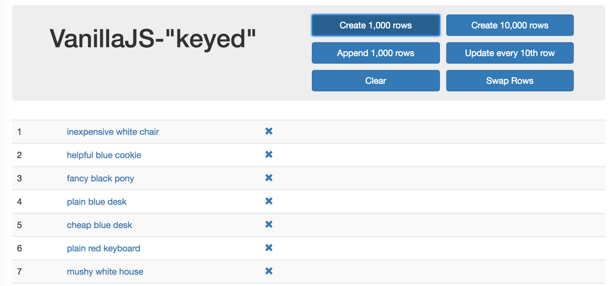

Making frontend
fun again!
...still stuck on boring tabular data?
by Salvatore Laisa @ Milano Frontend 30/01/2018
About you
- developers?
- designers?
- musicians?
- artists?
- anything else?
About me
- Started as Web Designer in 2006
- Now Senior Frontend Developer @ Radicalbit
- Kung fu Viet-vo-dao & Tai Chi practitioner
- DK fighting the Burning Legion (Lammorte)
Agenda
- Down the memory lane
- What about now
- The "common" ones...
- ...and the odd ones!
Down the memory lane
--- Flash, Flash everywhere! ---
What was so great with Flash? (and the "beginning" of frontend development)
creativity
Designing & coding (great) experiences
HTML & CSS had really strong contraints at the time, so Flash was the right environment for creative designer and coders that wanted to create "wow"- factor experiences on the web.
What has been created?
Many cool things like: engagement websites, games (there were more Flash games then that HTML5 ones today), animated movies/series, augmented reality "stuff".
What about now
--- enterprise, but not THAT one... ---
Ten years later...
We now have incredibly powerful browsers, a Javascript standalone runtime (Node.js), third parties plugins almost extinghuished, HTML+CSS+JS now leveraged to do what we want them to do!
and what we are building on daily basis?
We also have benchmarks based on how many "rows-per-seconda-a-framework-can-draw"
That's the most awesomeness ever! Isn't it?
The "common" ones...
--- don't underestimate the (apparently) obvious ---
What other kind of less boring stuff we can do?
- slides (like these ones...)
- 2D/3D games
- (interactive) movies/animations
- Your own automations
- [Node.js] CLI tools
- [Node.js] IoT apps
amazingly, they don't require forms or tables!
Unfortunately, something was lost...
- text regions
- text exclusions
- pagination templates (probably killed by web-components)
- CSS custom filters (shaders)
...and the odd ones!
--- ("engine room... WARP SPEED!") ---
Gamepad API
Plug & play... in the browser!
window.addEventListener("gamepadconnected", (e) => {
console.log("Gamepad connected at index %d: %s. %d buttons, %d axes.",
e.gamepad.index, e.gamepad.id,
e.gamepad.buttons.length,
e.gamepad.axes.length);
});
Issues
- status: working draft
- works only in Chrome & Firefox but...
- ... with incosistent API
- Xbox controller on MacOS requires addiotional drivers
Browser API (???)
Oh, that Nolan movie with Leonardo Dicaprio!
// An iframe tag can become a nested target
const browser = document.querySelector('iframe');
browser.reload();
browser.goBack();
browser.goForward();
browser.zoom(zoomFactor);
I hope you will find some meaning about this...
Web Audio
processing and synthesizing audio!
thought it's a bit hard ... but many resources are available.
you can also build a guitar tuner out of it!

Web MIDI
Musical Instrument Digital Interface
- Web audio manipulates sound, MIDI executes sounds
- Musical instruments can have MIDI capabilities
- you can create music or connect an instrument to the computer
Bluetooth
Proximity has never been closer!
navigator.bluetooth.requestDevice(options).then(device => {
log('> Name: ' + device.name);
log('> Id: ' + device.id);
log('> Connected: ' + device.gatt.connected);
}) .catch(error => { log('Argh! ' + error); });
Bluetooth: heads up!
- works only in Chrome
- GATT compatible
- API based on promises
- there is a Polymer element for it!
- checkout the Physical Web !